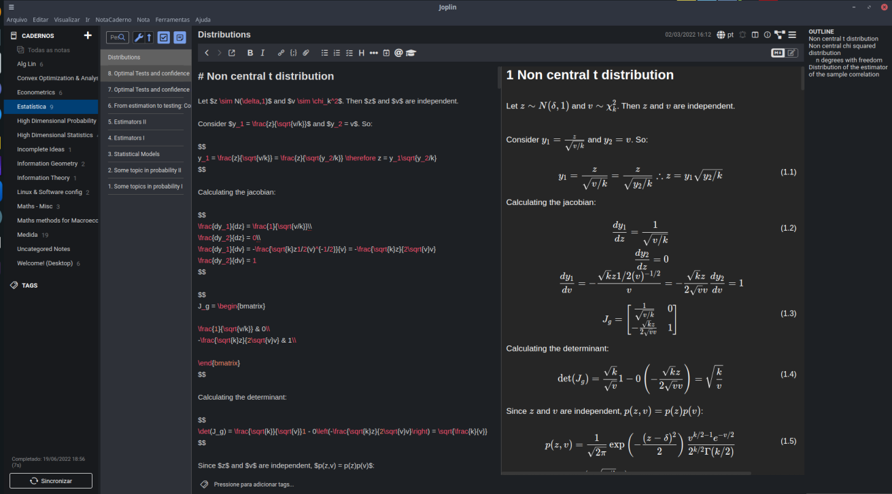
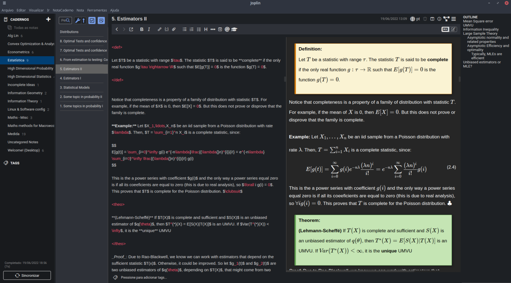

Eu nunca organizei direito as minhas anotações. Escrever a tese de mestrado me forçou a organizar melhor as minhas anotações. Uma vez que eu comecei a manter algumas anotações organizadas, eu decidi manter todas as anotações de estudo organizadas.
Eu nunca poderia manter as anotações em papel porque eu facilmente amassaria ou molharia ou perderia. Sem contar que eu não tenho nenhum plano de andar pra cima e pra baixo com 100 folhas de papel. Portanto, o eu queria um aplicativo para fazer anotações.
Existem milhares de aplicativos que fazem isso - evernote, notion etc. Como muita coisa que eu faço é envolve matemática, eu precisaria de um aplicativo que permitisse anotar matemática, idealmente usando a notação do LaTeX. Eu também gostaria de poder escrever e manter as notas em markdown: isso deixa as notas relativamente portáveis e permite que eu migre elas facilmente ou converta para algum outro formato (usando o pandoc, por exemplo). Isso infelizmente exclui o notion, um xodó de algumas pessoas.
Desde de 2020 eu uso o Joplin, que é excelente. Eu queria algumas coisas que o Joplin não tem (e muito provavelmente não terá no futuro próximo) e decidi migrar. Como não achei nenhum app que fizesse o que eu quero, eu fiz uma solução meio do it yourself. Eu vou discutir tanto o Joplin quanto a minha solução custom made

O Joplin é um app open source de anotações que é baseado em markdown: você escreve um markdown e ele compila e gera o output dentro do aplicativo - ao mesmo tempo que você digita! Como um bom aplicativo de notas, ele permite você fazer link entre duas notas. O Joplin também permite você dividir as suas anotações em cadernos, que podem conter subcadernos - o que é particularmente conveniente para anotações acadêmicas. Cada documento é uma nota, que pode morar dentro de um caderno ou viver solta dentro do aplicativo.
O Joplin fornece duas outras coisas que eu diria que são essenciais: ele tem aplicativo para todas as plataformas - Windows, Mac, Linux, Android e iOS - e suporte para sincronizar com o dropbox (e outros serviços de nuvem).
Quando eu comecei a usar o Joplin, era basicamente isso que o aplicativo tinha a oferecer. Eu achei ótimo. Em tempos mais recentes, foi criado um sistema de plugins, e graças a uma comunidade muito ativa, existem uma enorme variedade de plugins. Entre os meus favoritos:
Outras coisas legais que o Joplin permite é usar um editor externo; adicionar tags para cada nota e buscar por tags; fazer listas de tarefas com checkboxes; editor visual (que mostra como o texto fica ao invés do markdown). Ele também tem uma extensão pros navegadores que permite você fazer web clipping e colocar direto dentro de uma nota.
Eu não usava o editor externo no começo, mas mudei de ideia e passei a usar - mais sobre isso em breve. As outras opções eu rarissimamente ou nunca uso: a organização em cadernos é ideal pro formato acadêmico e eu nunca uso tags; eu fiz duas - se tanto - listas de tarefas no Joplin; eu odeio editores visuais; nunca tive nenhuma necessidade de web clipping.
Em termos de customização: o Joplin permite você criar um arquivo CSS que é aplicado ao html gerado da nota. Isso permite customizações relativamente simples - mudar a cor do fundo, mudar a fonte da letra - e algumas coisas mais radicais. Por exemplo, você pode definir caxias coloridas com texto pré formatado antes. Por exemplo, eu defini caixas de teorema, definição e lema:

A partir da customização do CSS também é possível numerar as seções e as equações automaticamente.
O editor do Joplin é perfeitamente adequado e sincroniza muito bem com o texto que é gerado. Ele tem alguns atalhos para tarefas mais comuns - colocar negrito, itálico, etc - mas ele não permite criar atalhos dos ambientes que você criou no CSS ou macros que expressões que você usa normalmente. O editor também não tem completamento automático do texto. Como no Joplin não é muito fácil definir novas variáveis do LaTeX, digitar equações se transforma em uma tarefa particularmente tediosa.
Eu não mudaria de software se eu não tivesse críticas e se elas não fossem significativas. A principal é que o Joplin é relativamente restrito em fazer referência a objetos do texto: teoremas, definições e até equações não são numeradas dentro da estrutura do markdown. As equações, por exemplo, são numeradas durante a compilação. Qualquer mudança na ordem do texto força a gente a mudar, manualmente, a numeração das equações. Isso dificulta mudar trechos do texto ou expandir notas existentes.
Justiça seja feita: isso não é tanto uma falha do Joplin, é mais uma falha do markdown. Felizmente, o Joplin permite que a gente se html puro, então é manejável manter links para blocos de teoremas. Mas a situação não é ideal.
O meu outro problema com o Joplin é que ele é pesado. O software ocupa uns 1 GB de HD e 700 mb de RAM. Notas muito grandes são particularmente complicadas, e mais de uma vez eu me vi obrigado a quebrar notas em dois para fazer o Joplin deixar de ser extremamente lento.
Um problema bemmm menor, e que não me faria largar o Joplin, é que os links para os arquivos são impossíveis de lembrar. A única maneira de obter é abrindo a lista de notas e copiando e colando o link. Um link que fosse relacionado ao nome da nota facilitaria a vida (mas essa opção impõe um monte de limitação)
Pra ser bem honesto, se não existisse nada melhor do que o Joplin, eu continuaria nele. Se você não planeja tomar notas sobre matemática - ou simplesmente não é tão cricri quanto eu - e tem RAM sobrando, ele é ótimo
Em tempos mais recentes, eu estava usando o Joplin mais como um navegador de internet, que visitava as notas compiladas a partir dos markdowns, do que qualquer outra coisa. Isso me fez considerar algumas opções.
A mais óbvia é usar puro LaTeX. Apesar de ter sido desenvolvido no fim dos anos 80, ele ainda é a melhor opção para editar documentos técnicos (e vocês não vão me convencer do contrário). Eu tenho dois problemas com usar o LaTeX pra anotações.
O primeiro é que o LaTeX não é muito simples. Colocar algo em negrito exige um comando com contrabarra, quase todos os documentos tem longos cabeçalhos de opção, etc. Markdown é extremamente simples, e isso é uma virtude quando a gente fala de tomar notas pessoais: é bem mais fácil escrever um documento markdown que um documento LaTeX.
O segundo problema é que não é fácil criar links entre arquivos pdf. Isso é um problema bem maior que o primeiro, na minha opinião. É claro, eu poderia criar um único, enorme arquivo pdf com todas as minhas anotações pessoais. Sem contar o tamanho do arquivo, navegar dentro disso seria um pesadelo.
O LaTeX certamente me daria muitas opções de anotar matemática, gerenciar referências dentro do documento e citações. Mas ele não foi feito para trabalhar conectado com outros arquivos.
Muito parecido com o Joplin em certos aspectos e tem uma tonelada de opções, mas não achei nenhuma que resolvesse os problemas fundamentais do markdown básico. Eu também não explorei muito!
Eu fiquei pensando no que eu precisava. A lista acima de coisas que eu gosto do Joplin dão uma boa ideia. Vamos quebrar em partes o que eu gosto e o que eu preciso:
Basicamente, o que eu quero é algo que, a partir de arquivos markdown gerem arquivos legíveis por humanos que possam se conectar de maneiras mais ou menos arbitrárias…
Demorou algum tempo para eu me dar conta do que é óbvio: Tudo que eu preciso é de um site gerado a partir de markdown! Que fique claro, eu tenho certeza que essa observação não é original. Ela é tão trivial que eu fico envergonhado de não ter pensado nisso antes!
Veja que a maior parte dos compiladores de Markdown não permitem estruturas muito complicadas que liguem diferentes pontos do documento uns com os outros. Isso dificulta citar um teorema para provar outro ou fazer referência a uma equação anterior. Felizmente, existem vários compiladores de markdown, com diferentes flavors de markdown.
Um deles é o Markedly Structured Text. A ideia é simplesmente estender a linguagem markdown de maneira a contemplar usos mais técnicos de markdown - o que inclui numerar equações e se referir a objetos arbitrários no texto. Não poderia ser mais adequado para o meu propósito.
A pergunta é como a gente agrupa o MyST a uma estrutura de site? Minha primeira tentativa foi amarrar o MyST a um sistema de site estático que normalmente processa markdowns (no caso, o eleventy com a versão do MyST em JS). Isso foi um fiasco, porque eu não sei JS e não consegui fingir que sabia JS o suficiente pra resolver.
Felizmente, existe o Sphinx, que foi criado para gerar documentação do Python, mas cresceu para permitir sites mais gerais. O Sphinx foi criado para usar o reStructuredText, mas aceita markdown usando o MyST. O Sphinx funciona com o Python, então a portabilidade dele para qualquer sistema operacional é basicamente garantida.
Meu sistema de anotações agora é bem simples: todos os arquivos, tanto os markdowns quanto os htmls gerados, estão no GitHub. Eu edito os markdowns direto no emacs. Para gerar os htmls, basta dar um comando para rodar o Sphinx, direto no terminal. Eu criei um exemplo no GitHub, que vai ser útil na sequência.
Eu vou dar o passo a passo:
Primeira coisa a fazer é instalar o Sphinx, via o Python. Você sempre pode fazer direto via pip3 (como eu fiz) ou de alguma maneira mais esperta usando virtualenv para não bagunçar o Python usado pelo sistema. Feito isso, o seguinte comando gera o site:
sphinx-quickstart
Esse comando vai perguntar uma cacetada de coisa, nome do projeto, seu nome etc. Ele tem algumas opções que eu segui o default.
Rápida lista do que cada coisa faz (pastas serão marcadas em itálico):
Você também vai precisar instalar o myst-parser via Python para usar o gerador de markdown. O MyST aceita as coisas usuais do Markdown e várias outras para facilitar gerar texto técnico.
Eu sugiro que você também instale duas extensões extras:
Se você copiar o meu config.py e não quiser usar esses pacotes, não esqueça de mudar as linhas relevantes.
Você pode criar qualquer estrutura de pastas dentro do Sphinx. No exemplo do github, eu criei uma pasta Exemplo com um arquivo markdown exemplo.md. O arquivo markdown tem apenas cinco linhas e mostra como usar o sistema de referência do MyST. É um arquivo markdown e eu assumo que vocês já sejam familiares com eles.
É importante que o arquivo index.rst seja capaz de achar os seus arquivos (ou arquivos que apontem para outros arquivos). Ele no momento deve se parecer com isso:
Welcome to Exemplo Note Taking's documentation!
===============================================
.. toctree::
:maxdepth: 2
:caption: Contents:
Indices and tables
==================
* :ref:`genindex`
* :ref:`modindex`
* :ref:`search`
Para ele ser capaz de achar o seu arquivo, você deve listar ele, sem extensão. No nosso caso:
Welcome to Exemplo Note Taking's documentation!
===============================================
.. toctree::
:maxdepth: 2
:caption: Contents:
Exemplo/exemplo
Indices and tables
==================
* :ref:`genindex`
* :ref:`modindex`
* :ref:`search`
Não há necessidade de colocar a extensão. Cuidado com a identação! Ele espera três espaços na linha Exemplo/exemplo.
Tudo que restou pra gente é gerar o site. Abra o terminal1 dentro da pasta (você pode fazer isso de diversas maneiras, usando o comando cd por exemplo) e execute:
sphinx-build . _build
Os arquivos htmls vão ser gerados direto dentro da pasta __build_. Se o processo gerar quaisquer warnings ou erros, eles vão aparecer direto no terminal.
Existem um trilhão de modificações que você pode querer colocar, diferentes estilos, css etc etc. Eu recomendo olhar a documentação do Sphinx para entender as opções e temas.
Eu admito que eu estou gostando tanto do novo sistema que eu não vi nenhum grande problema com ele. Tento listar alguns:
Isso é trivial no Linux, e pode ser feito no Mac indo em utilitários, terminal. Certamente é fácil fazer no Windows, mas eu não lembro como↩︎